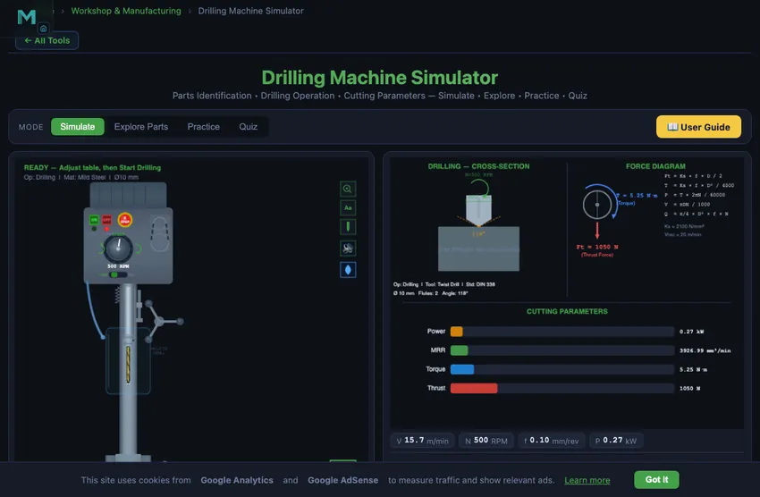

Drilling Machine Simulator
3D Model — Drilling Machine Simulator
Free online drilling machine simulator. Identify parts, operate controls, and calculate cutting speed, feed rate, MRR, power and torque in real time. Try free!
Parts Identification • Drilling Operation • Cutting Parameters — Simulate • Explore • Practice • Quiz
| # | Question | Result |
|---|
1 Overview
The Metric / Imperial switch in the mode bar restates the job in US drilling units: surface speed in SFM, feed in in/rev, drill diameter, hole depth and table height in inches, metal removal rate in in³/min, power in hp, torque in lbf·in, thrust in lbf and finish in microinch Ra. The graph badges, the operation header, the penetration and gap callouts and the thrust-force label convert with it. Spindle speed stays in RPM and machining time in seconds.
The Drilling Machine Simulator is a virtual column drill press that lets you perform drilling operations on different materials while calculating all key cutting parameters. A drilling machine creates round holes using a rotating drill bit pressed into the workpiece. This simulator teaches you the machine's major components, how to select proper cutting speeds and feeds, and how parameters like drill diameter, spindle speed, and feed rate affect MRR, power, torque, thrust force, surface roughness, and machining time.
The dual-canvas layout shows the drill press with animated spindle rotation and feed motion on the left, and cutting parameter diagrams with force vectors on the right. The control panel lets you select the drilling operation type, workpiece material, and adjust spindle speed, feed rate, drill diameter, and hole depth.
2 Setting Up the Job
The simulator opens in Simulate mode. The left canvas displays the drilling machine with labeled parts. Graph badges show cutting speed, RPM, feed rate, and power in real time. The control panel provides operation type selection, material selection, and sliders for spindle speed, feed rate per revolution, drill diameter, and hole depth.
To drill your first hole: (1) Select the operation type (e.g., standard drilling). (2) Choose a material. (3) Set the spindle speed, feed rate, drill diameter, and hole depth using the sliders. (4) Click "Start Drilling" to watch the animated drilling sequence. The drill bit rotates, feeds into the workpiece, and chips spiral out of the hole. (5) Read the eight calculated results in the readout grid. Click "Reset" to prepare for the next hole.
3 Running the Operation
The left canvas animates the drill press operation, showing the spindle rotating at the set RPM while the quill feeds the drill bit into the workpiece at the specified feed rate. Chip spirals emerge from the hole as material is removed. The right canvas displays cutting parameter diagrams and force vectors showing the thrust force pushing the drill into the workpiece and the torque resisting rotation.
The readout grid shows eight results: Cutting Speed (m/min), Feed Rate (mm/rev), MRR (mm^3/min), Power Required (kW), Torque (N m), Thrust Force (N), Surface Roughness (micrometers Ra), and Machining Time (seconds). The cutting speed is calculated at the drill periphery as V = pi D N / 1000. Thrust force and torque are critical for selecting the right drill press and clamping the workpiece securely.
4 Speeds, Feeds & Theory
The Explore Parts mode provides an interactive identification guide to all drill press components. Categories cover the base, column, table (height adjustable), head assembly (motor, belts, spindle), drill chuck, quill and feed mechanism, and speed selection controls. Click any component to highlight it on the canvas and read its function and specifications.
Additional topics include types of drilling machines (sensitive, upright, radial, gang, multi-spindle), drill bit geometry (point angle, lip relief, helix angle, chisel edge), drilling-related operations (reaming, boring, counterboring, countersinking, tapping), and cutting fluid selection. This comprehensive reference prepares you for both practical workshop skills and written examinations.
5 Try a Problem
Practice mode generates drilling calculation problems. You might need to calculate the correct RPM for a given drill diameter and cutting speed, determine the machining time for a specific hole depth, compute the MRR, or find the required power. Enter your numerical answer and check it. Step-by-step solutions show the complete calculation method.
Quiz mode presents five questions per session covering parts identification, operation selection, and numerical calculations. Questions might ask you to identify a drill press component, choose the correct operation for a given task, or calculate thrust force from cutting parameters. Review your results and retake to improve.
6 Shop Tips
- The key formula for drilling is V = pi D N / 1000. Rearrange to N = 1000 V / (pi D) when you know the recommended cutting speed for a material.
- Feed rate in drilling is per revolution (mm/rev), not per minute. Table feed rate (mm/min) = f x N.
- MRR for drilling = pi D^2 f N / (4 x 1000), since the full drill diameter is the hole width.
- Thrust force increases with feed rate and drill diameter. Always ensure the workpiece is properly clamped to resist thrust force.
- For softer materials like aluminum, you can use higher cutting speeds (80-100 m/min) and feed rates. For harder materials like stainless steel, reduce speed significantly (8-15 m/min).
- Use Explore Parts mode to learn all components before attempting the quiz, as visual identification questions are common in exams.
- In Practice mode, always check the units. Feed rate in drilling is typically mm/rev, while machining time needs the total feed in mm/min divided into the hole depth.
What is a Drilling Machine?

A drilling machine (drill press) is one of the most essential machine tools in any workshop. It creates round holes in workpieces using a rotating cutting tool called a drill bit. The machine consists of a base, column, table, spindle, and head assembly with motor and drive mechanism. Understanding each part and its function is fundamental for mechanical engineering students.
This simulator lets you identify all major parts of a column drilling machine, operate the controls interactively, and calculate cutting parameters including cutting speed (V = πDN/1000), feed rate, material removal rate (MRR), power consumption, torque, and thrust force in real time.
Types of Drilling Machines
Common types include: Sensitive Drill Press (bench-mounted, small holes), Upright/Column Drill Press (floor-mounted, medium work), Radial Drill Press (large/heavy workpieces), Gang Drill (multiple spindles), Multi-spindle Drill, CNC Drill, and Deep Hole Drilling machines. This simulator focuses on the column drill press, the most common type in workshops.
Drilling Operations
Besides simple drilling, a drill press can perform reaming (finishing existing holes to precise size), boring (enlarging holes), counterboring (flat-bottom enlargement for bolt heads), countersinking (conical enlargement for screw heads), and tapping (cutting internal threads). Each operation has specific speed and feed requirements.
Speed and Feed for a 10 mm Drill in Mild Steel
The single most common workshop calculation. You are drilling a 10 mm through-hole in 25 mm mild steel with an HSS twist drill. Picking parameters:
| Step | Working | Result |
|---|---|---|
| Cutting speed for HSS in mild steel | Vc = 30 m/min (handbook value) | — |
| Spindle RPM | N = 1000·Vc/(πD) = 1000×30/(π×10) | N = 955 rpm |
| Round to typical drill press step | (common steps: 600, 800, 1000, 1200 rpm) | 1000 rpm |
| Feed per revolution (handbook) | f = 0.20 mm/rev for mild steel with HSS | — |
| Feed rate | Vf = N × f = 1000 × 0.20 | 200 mm/min |
| Material removal rate | MRR = Vf × πD²/4 = 200 × 78.5 | 15,700 mm³/min |
| Time for through-hole (25 mm) | t = depth/Vf = 25/200 | 7.5 seconds |
Real-world adjustments: with cutting fluid, you can push the feed to 0.25−0.30 mm/rev. Without coolant, drop to 0.15 to keep the drill from overheating. With carbide drills, multiply the cutting speed by 3 and you can go to 0.4−0.6 mm/rev feed — same hole in 2 seconds. The trade-off is carbide cost.
Peck Drilling — The Trick for Deep Holes
Above about 4× the drill diameter in depth, chip evacuation becomes the limiting factor. The drill cannot push chips up the long flutes; they pack at the cutting edge, heat the drill, and break it. The solution is peck drilling: drill a small distance, retract fully to clear chips, drill a bit more, retract again, repeat. Modern CNC drilling cycles (G83) automate this; manual drilling does it by hand.
Typical peck depth is 0.5× to 1× the drill diameter. So for our 10 mm drill, peck about 5−10 mm at a time. The drilling time roughly doubles but the drill life triples. For aluminium and copper, peck is rarely needed (chips flow well). For tough steels (4340, stainless 17-4 PH) and cast iron, peck is mandatory for any hole deeper than 3×D.
Five Common Drilling Mistakes
- Workpiece not clamped. The drill grabs and spins the workpiece into a sharp metal fan. Always clamp.
- Centre punch skipped. The drill walks across the surface before finding its spot. Centre-punch the hole location first — even on a small workpiece.
- Too slow on aluminium. Aluminium needs about 3× the cutting speed of mild steel. Drilling too slow leaves built-up edges on the drill, awful finish, and wandering holes.
- Wrong drill grind for the material. Standard 118° point angle works for general steel. For brass and copper, use a flat (90°) grind to prevent grabbing. For stainless, use 130° with a thinned web.
- Skipping the through-hole backing block. The drill breaks through and tears the underside finish. A piece of scrap wood under the workpiece eliminates this.
Explore Related Simulators
If you found this Drilling Machine simulator helpful, explore our Lathe Machine simulator, Micrometer Screw Gauge simulator, Vernier Caliper simulator, and Thread Nomenclature trainer for more hands-on practice.